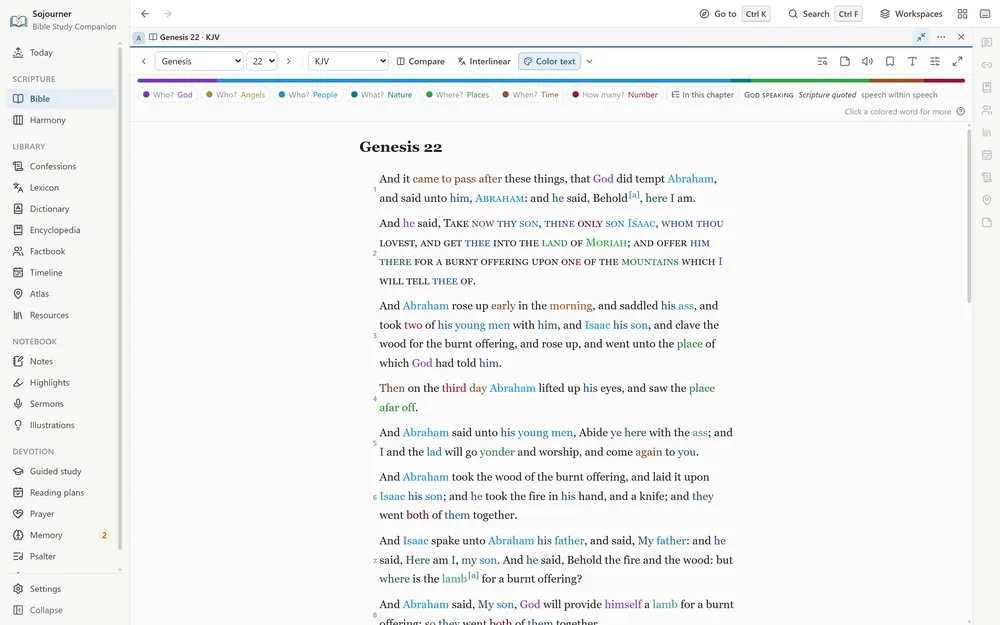
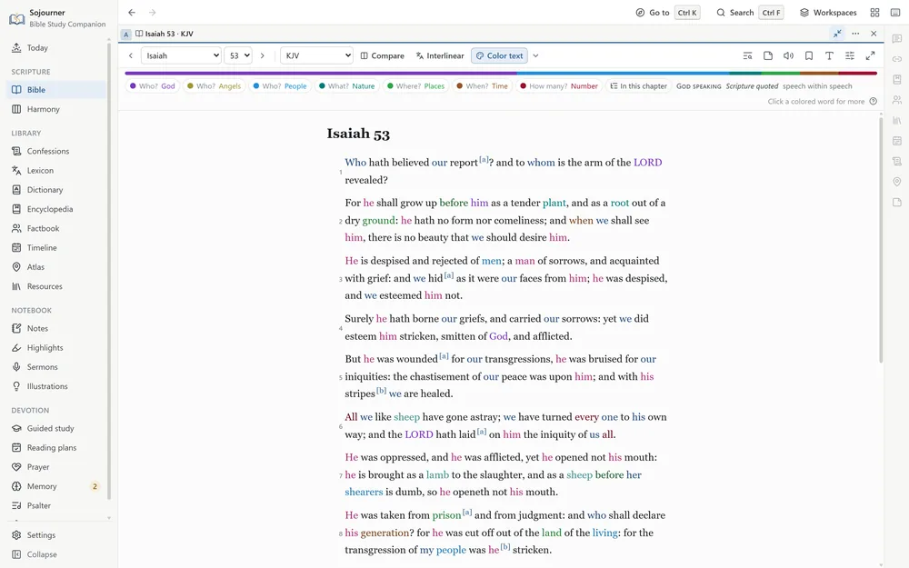
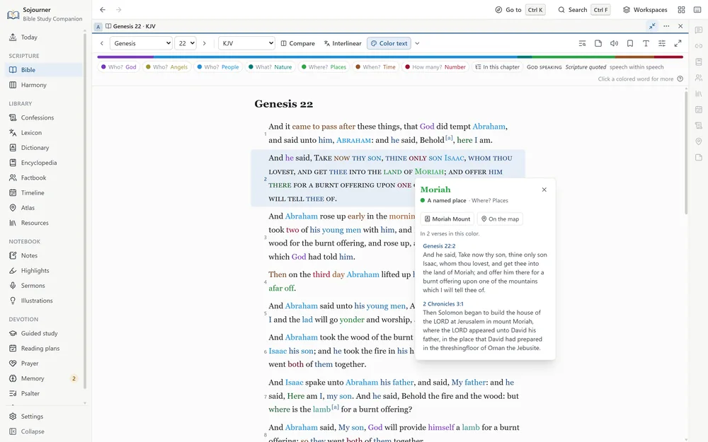
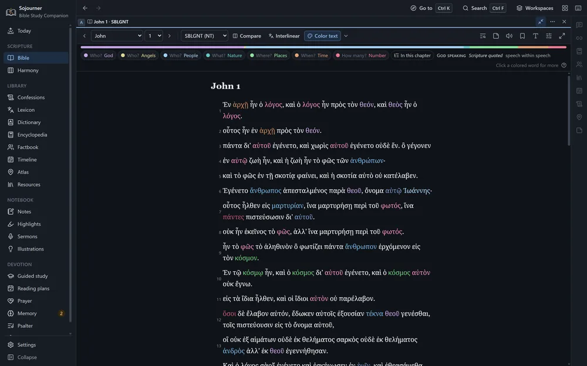
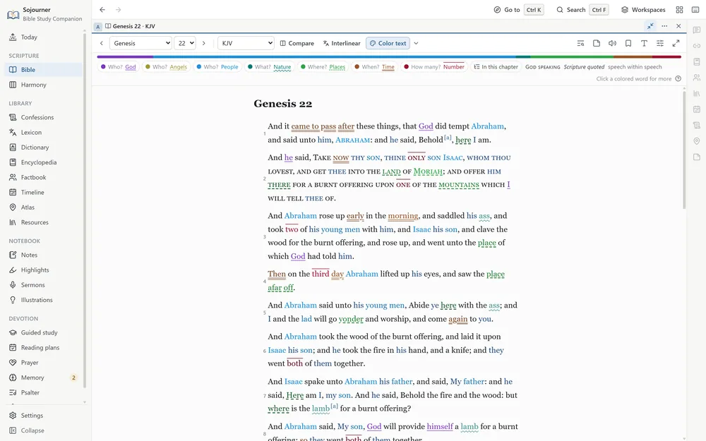
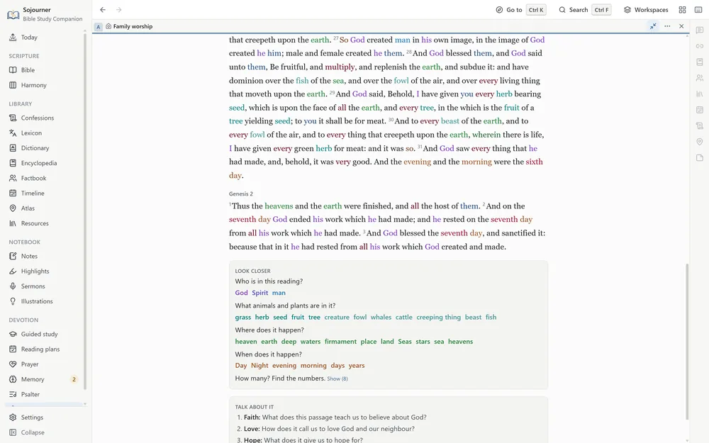

How it works
Panes That Follow Each Other
You can open up to eight panes and split the window however you like. Drag a pane to dock it, stack tabs inside it, pick a ready-made arrangement, or save the whole layout as a named workspace that survives a reinstall. The lists that sit beside a page, such as the encyclopedia’s index or a commentary’s contents, can be narrowed or folded away, so even a thin pane keeps room to read.
Then you link them. Click a verse in one pane and every linked pane turns to it. The commentary, the cross references, the confession proofs, the encyclopedia article, and the atlas map all land on the same verse at once. So do the people and places the verse names, its place on the timeline, and the books on your shelves that cite it. You stop hunting and start reading.
One click, and the whole shelf opens to the same page.
You can also set translations side by side, or hold one verse up against every translation at once. Every Scripture reference anywhere in the program, in a commentary or a confession or your own notes, shows the verse on hover.
 Opens the full size picture.
Opens the full size picture.
New in 0.4.0
Color Text
Every person, place, time, and number in the Bible, each in its own color. Who is here, what, where, when, and how many are answered at a glance.

Opens the full size picture.Turn it on with Color text in the Bible’s toolbar, beside Interlinear. Every word that answers one of those questions takes the color of its family.
- Who? God, in purple. The Father, the Son, and the Holy Spirit each have a shade of their own, with every name, title, and pronoun that means them.
- Who? Angels, in olive. Angels are bright, and demons, false gods, and idols are dark.
- Who? People, in blue. Named people, then nations and tribes, then words like king and servant, then the pronouns.
- What? Nature, in teal. Animals and plants.
- Where? Places, in green. Named places, then words like city and wilderness, then words like up and there.
- When? Time, in brown. Days, years, and feasts, then words like when and then, and it came to pass.
- How many? Numbers, in crimson. Numbers, measures like cubits and shekels, and amounts like all and many.
Within a family the most specific word is the brightest. Jerusalem is brighter than city, and city is brighter than there. Verbs, objects, and ideas stay black, so the page still reads as a page.
Christ where the apostles saw him
Every colored word was checked by hand. Where the New Testament says an Old Testament passage speaks of Christ, his color follows. The Servant of Isaiah 53 takes it, and the Son of Psalm 2, and the ruler “whose goings forth have been from of old, from everlasting” in Micah 5:2, and the one in Zechariah 12:10 of whom God says “they shall look upon me whom they have pierced.”

Opens the full size picture.Click any colored word
A colored word opens a card that says what it is, with every verse in the Bible where that word has that color, in the translation you are reading. A person or a place opens in the Factbook, and a place opens on the map. The thin strip under the toolbar shows how much of each family the chapter holds, and a click hides or shows a family. The In this chapter list shows everyone and everywhere the chapter names, and picking one rings it wherever it stands.

Opens the full size picture.In every translation, and in the Greek and Hebrew
The colors are carried from the King James to the other English translations word by word, so the World English Bible’s Yahweh is colored like the LORD. They reach the Greek and Hebrew through Strong’s numbers, and a translation you add yourself is colored the same way. The Vulgate and the Septuagint have no word tagging, so they get the names and the commonest words.

Opens the full size picture.Who’s speaking
Beside Color text, in its menu, is Who’s speaking. God’s own words are set in small capitals, as “Take now thy son” is in Genesis 22, and every “Thus saith the LORD” in the prophets. Scripture quoted inside a speech is in italics, as when Jesus answers the tempter from Deuteronomy, and speech within speech is a shade lighter. Turn on the words of Jesus in red as well, and every speaker in a passage can be told apart.
If you cannot see every color
Underline each family, in the same menu, gives each family its own line under the words as well. One is solid, and the others are dotted, wavy, dashed, double, and a line above.

Opens the full size picture.At the table, in the pulpit, and in search
Color text can color a sermon’s passages, and tonight’s reading in family worship. There it adds Look closer, which asks the family who is in the reading, what animals and plants, where it happens, when, and how many. Each answer stays hidden until you show it.

Opens the full size picture.Search can look for a color or a speaker too, such as every verse that names the Son, or every place in Isaiah where God himself speaks. And copied verses keep their colors when you paste them into Word, Google Docs, or an email.
Greek and Hebrew
The Original Words, for People Who Have None
Every phrase of the King James text is tagged with its Strong’s number, through both testaments. Turn the interlinear on and it is laid out the way Blue Letter Bible lays it out, in a compact table with one row for each English phrase. Beside the phrase sit its Strong’s number, the Hebrew or Greek word as the text has it, the word’s root and how to say it, and its grammar. Small words the King James leaves untranslated, like the Greek article, share the row of the word they go with. A switch puts the words back into the original order when you want to see the sentence as it was built, and another hides the Hebrew accent marks while keeping the vowels.
 Opens the full size picture.
Opens the full size picture.
 Opens the full size picture.
Opens the full size picture.
The grammar is spelled out in plain English, such as aorist active indicative, third person singular, rather than in code letters. Hover over a word to see it, or open the word’s card, where a Parsing section explains each term. It tells you what the aorist is, what a piel does, and why a noun is genitive. The Hebrew and Greek were checked word by word against their sources through both testaments, and a Hebrew font sets the vowel points where they belong.
 Opens the full size picture.
Opens the full size picture.
Double-click any word, anywhere in the text, and its entry opens in the lexicon you choose. You can search the Greek and Hebrew without typing accents or vowel points.
Word study
Pick any Hebrew or Greek word and Sojourner lays out the facts about it. How often it occurs, how the King James renders it, the forms it takes and the grammar of each, the words related to it, and every place it stands.
 Opens the full size picture.
Opens the full size picture.
Search by grammar
Every Hebrew and Greek word is parsed, which means its grammar is labeled, such as its tense or whether it is a command. Search by grammar finds every word of one kind, such as every command in Ephesians. You choose from lists rather than typing code letters, so you do not need to know how the labels are written.
Where the Greek editions differ
Set the five Greek editions side by side on a verse and see where they read differently. At 1 John 5:7, the words about the three that bear record in heaven, known as the Comma Johanneum, stand only in the Textus Receptus.
None of this asks you to have studied the languages. That is the point of it. A man with a concordance and some patience has been able to do real work in the text for two hundred years, and this only makes the same work quicker.
Who, where, and when
The People and the Ground They Walked
A page of text cannot easily show you who a man was, where something happened, or how it lines up with everything else happening at the time. The Factbook, the timeline, the atlas, and the harmonies are for that.
The Factbook
A page for each of four thousand two hundred and seventy-five people, places, and things in the Bible. The Bible has several men named Zechariah, and the Factbook tells them apart by the verses that name them. Each one gets his family, every verse, and what the encyclopedia and the dictionary say about him. Double-click a name in the text and it opens the person that verse means.
The timeline
Four hundred and sixty-four events, from the Creation to Paul in Rome, on a line you can zoom. The eras are marked, the kings of Judah and Israel run side by side, and a strip beside the text shows where the chapter you are reading falls. The dates are approximate, taken from a traditional chronology.
Turn on Church history and the line runs on past the apostles to the present, with two hundred and ninety-six events in ten eras. There are councils, creeds and confessions, lives, writings, and missions. Every date comes from a source, mostly Philip Schaff’s History of the Christian Church, and each event quotes it. Where the sources give no date, the event is left out rather than guessed. A creed or confession opens its text, and a writing opens its book if it is on your shelves. A strip beneath the timeline shows where you are, and you can drag it to move along.
 Opens the full size picture.
Opens the full size picture.
 Opens the full size picture.
Opens the full size picture.
 Opens the full size picture.
Opens the full size picture.
The atlas
One thousand three hundred and forty-two places, each with its coordinates, its modern identification where there is one, and every verse that names it. Fourteen journeys are traced across the map, from Abraham leaving Ur to Paul reaching Rome, and each stop carries its own reference and a line saying what happened there. The old regions are shaded as a soft wash inside a dashed line, since no one ever surveyed their borders and a crisp line would claim more than anyone knows.
 Opens the full size picture.
Opens the full size picture.
The map packs
Two packs you can add give the atlas the ground itself. They are on the releases page beside the book shelves, under Sojourner Library Packs, and they need Sojourner 0.3.6 or later.
The Terrain pack, about 271 MB, shades the hills and valleys of the whole biblical world, in the most detail over the Holy Land. Turn on Raise the land in 3D under Layers and the map tilts to show the relief. The Jordan rift drops away, the Judean hills stand up, and the high plateau east of the Jordan rises beyond them.
The Imagery pack, about 1.26 GB, adds a view from the sky, switched on under Layers. The whole biblical world comes from NASA’s Blue Marble. Over it lies a cloud-free picture from the Copernicus Sentinel-2 satellites, sharp down to ten meters over the Holy Land, Lebanon, and Transjordan. It is a step less sharp over Syria, Sinai, the Nile delta, Asia Minor, Greece, and Cyprus, and a step less again over the Nile up to Thebes, Mesopotamia, and Italy. In this view the drawn coasts and lakes step aside so the land shows through.
To add one, open Settings, choose Library packs, and pick Install a map pack. Like the shelves, they come as files you download yourself, so they can just as well arrive on a USB stick.
The harmonies
Two harmonies of the Gospels, both laid out in four columns. Robert M. Sutherland’s of 2020 runs to a hundred and thirty-six events, and A. T. Robertson’s of 1922 to a hundred and eighty-five. Each event is titled and paired with where it is told in Matthew, Mark, Luke, and John, with Acts 1 brought in for the ascension. Where an event appears in more than one Gospel, one button sets the accounts side by side.
 Opens the full size picture.
Opens the full size picture.
One Search Box
One box searches Scripture, the commentaries, the lexicons, the Factbook, the confessions, the encyclopedia, your books, and your own notes, prayers, sermons, and illustrations, with the same rules everywhere.
Put an exact phrase in quotation marks. Ask for either of two words with OR, or leave a word out with a minus sign. Group words in parentheses, ask for words near each other, match the start of a word, or, for those who know them, use regular expressions. A plus sign asks for the exact form and its capitals, so +LORD finds the covenant name as the King James prints it, and skips the ordinary word Lord.
You can also narrow a search by typing a filter into the box itself. There are filters for a book, a translation, a Strong’s number, the words of Christ, and the verses you have notes on, and they are saved with the search. Older spellings match, so shew finds show. Results can be counted by book and by translation, or laid out like a printed concordance, one line for each place the word appears.
 Opens the full size picture.
Opens the full size picture.
Reading
Book and chapter navigation, paragraph mode, verse numbers on or off, red letters, five named highlight colors and an underline, bookmarks, a find bar for the open chapter, a focus mode that clears everything else away, and printing.
Seven themes, including sepia, true black, and two built for high contrast. A font made for dyslexic readers, text you can size, and reduced motion for anyone who needs the screen to hold still.
The voice that ships with the program will read any chapter, commentary, or book aloud. In a book it starts at the page you are on and carries on from there, and the page follows the voice. Select a passage and choose Read aloud from here to start somewhere else. A commentary is read a verse or a paragraph at a time, and a list in the player jumps to any piece of it.
 Opens the full size picture.
Opens the full size picture.
Notes That Stay Yours
Write on a verse, on a chapter, or on a highlight. Templates are there when a blank page is the problem, for observation and interpretation and application, for question and answer, for a sermon outline, for a prayer in response. Type a reference inside any note and that verse is marked in the text from then on.
Highlighting works the same way. Five colors and an underline, each one named for what it marks rather than for its color. Promise in yellow, command in green, doctrine in blue, warning in orange. Then you can pull up every promise you have ever marked, across every book, in one list.
The Mine pane gathers everything you have written on the chapter that is open. Notes, prayers, sermons, and illustrations you delete wait thirty days in a trash before they are gone.
For preachers
Preparing and Preaching
The sermon editor treats your points as the outline, so the structure comes out of the manuscript instead of being kept beside it. Passage blocks render live in the translation the sermon is set to. Drag a point to a new place in the outline and it takes its sub-points, and everything written under them, along with it. Open another page while you write and it comes up in a new tab beside the sermon instead of in its place, so the manuscript is only a click away.
Part of a point can be set apart as a block for the explanation, the illustration, or the application. A block can also mark a transition, or carry a name you give it. Each kind has its own color, and the colors carry through to preaching mode and print, so you can find the application under any point at a glance.
 Opens the full size picture.
Opens the full size picture.
Every verse, commentary entry, confession section, lexicon entry, word study, encyclopedia article, and book selection carries a small microphone button. Press it and that text drops into the open sermon with its source line already attached. You never lose track of where a quotation came from.
Thoughts about a text seldom wait for the week you preach it. A single shortcut catches a sermon idea from anywhere in the program, and a selection in the Bible can start one with its verses already attached. Ideas wait in an inbox beside every manuscript and on the Sermons page, until you drag one into a sermon or start a new sermon from it.
 Opens the full size picture.
Opens the full size picture.
Illustrations go into a file of their own, each with where it came from and where you have used it. When you reach for one you have already told in this series, it says so before you put it in.
Twelve templates give you somewhere to begin when the page is blank. One sets out three points, each with an explanation, an illustration, and an application. Others give a verse-by-verse outline, a defender’s outline for answering an objection, and an outline for preaching to children and youth.
 Opens the full size picture.
Opens the full size picture.
Around that sit a six-stage preparation track, timed rehearsals that measure your speaking rate, and a preaching mode with pulpit-sized type and a clock. It will generate slides and export them to PowerPoint, and any line you mark gets a slide of its own. It builds fill-in handouts, prints, and exports to Markdown. Sermons group into a series with a reading plan for the congregation, and a series can give the church a verse a week to learn, printed on cards to hand out. When a sermon has been preached, there is a place to write down how it went.
 Opens the full size picture.
Opens the full size picture.
If you preach from a phone or a tablet, there is a podium file. It is the whole manuscript as one small web page with every passage written into it, so it needs no internet and no program but a browser. A tap turns the page, the text grows or shrinks to suit your eyes, and a clock keeps time against the minutes you meant to take.
![The podium file open on two phones. On the first, the opening part, with the title More Than Conquerors, Romans 8:31-39, a one-sentence summary, the date and service, the opening paragraph, and the start of verse 31 written in below it. On the second, the fourth part, The proof, he spared not his own Son, with its illustration and application blocks in their colors. Across the top of each are a menu of the parts with buttons to step back and forward, a clock at nothing of thirty-five minutes, and buttons to make the text smaller or larger.](assets/img/sojourner-podium.webp) Opens the full size picture.
Opens the full size picture.
The Ordinary Days
The Today page gathers what is actually in front of you. Where your reading left off, today’s portion of your plan, the sermons coming up, the memory cards that are due, and the people you meant to pray for. A new install opens on it. Once your household has begun family worship, it also shows what you will read and learn the next time you gather.
 Opens the full size picture.
Opens the full size picture.
Reading plans come with catch-up tools for the weeks you fall behind, and you can build your own. The prayer journal follows the ACTS pattern, keeps a list of people, nudges you toward the ones you have not prayed for in a while, and prints.
Memory covers Scripture and the catechism together, on a spaced repetition schedule, with three ways to practice. One leaves you only the first letter of every word, which is harder than it looks and works better than reading it over again.
A whole psalm or chapter is learned a part at a time. The next part comes once you have recalled the one before twice in a row, and last of all you say it through from the top. A card can also be turned around, to show you the words and ask where they are found. Ready-made sets will get you started, from the Romans Road and the Ten Commandments to a handful of short verses for little ones.
The Heidelberg Catechism and the Catechism for Young Children can be learned beside the Shorter and the Larger. For the Westminster catechisms, one button turns a proof text for each question you are learning into a Scripture card. The program will read a Scripture card aloud, or every one that is due, so you can practice with your eyes shut or your hands busy. In place of a streak there is a calendar of the days you practiced.
 Opens the full size picture.
Opens the full size picture.
The Psalter is there for singing too, on a page of its own under Devotion. Open a psalm, choose a tune, and press play. The words are set under the melody one stanza at a time, and each psalm remembers the tune you last sang it to. The page opens on the last psalm you had, the music can be made larger, and a long line breaks onto a second staff in a narrow pane.
The words are set line by line as the book of 1650 prints them, checked against two old editions and the Free Church of Scotland’s text. Nothing is modernized, so chuse, shew, and heav’n stay as the book has them.
 Opens the full size picture.
Opens the full size picture.
For the household
Family Worship
Matthew Henry preached a sermon on family religion and called it A Church in the House. Sojourner has a page for keeping that church, and it is made for the one who leads it, who may feel the least ready of anyone.
A gathering takes a few minutes. You read a short passage, sing a psalm, go over the catechism, and pray. If you choose a verse to learn by heart, you say it together before you pray. The Family worship page walks through each step in order, so nothing has to be prepared ahead and no one has to preach.
![The Family worship page, gathered eight times this September. Tonight the family reads Exodus 20:1-17, the Ten Commandments, sings Psalm 23, goes over question 5 of the Catechism for Young Children, and prays for three people from the prayer list. Beside the Begin button is Gather round. Below are the readings for the days coming up, from David and Goliath to the boy Jesus in the temple, a calendar of the last five weeks with a dot on each day the family met, and the reading plan in use, The First Four Weeks, at day 9 of 28.](assets/img/sojourner-family.webp) Opens the full size picture.
Opens the full size picture.
And these words, which I command thee this day, shall be in thine heart: And thou shalt teach them diligently unto thy children, and shalt talk of them when thou sittest in thine house, and when thou walkest by the way, and when thou liest down, and when thou risest up.
Deuteronomy 6:6-7 (KJV)
If you have never done this before, begin with the first four weeks. That is twenty-eight short readings that tell the story of the Bible, from the creation to the new creation. Each week has a psalm from the 1650 Psalter with its tune to play, and a new catechism question comes every other time you meet. You start with the Catechism for Young Children or the Shorter Catechism. The Heidelberg can be chosen in their place, and the Larger, with its long answers, is there for when the children are older.
Each reading comes with three questions to talk over, one each for faith, love, and hope. What does this passage teach us to believe about God? How does it call us to love God and our neighbour? What does it give us to hope for? You can reword them, add one, or take one away in the family settings, and your own go on the printed sheet too. Tonight’s catechism question comes with its answer, to say together until the children have it. Earlier questions come round again with the answer hidden until someone has had a try, so they are not lost. At prayer time the page offers three names from your prayer list, the three you have gone longest without praying for. The Lord’s Prayer is there for the nights when words will not come.
 Opens the full size picture.
Opens the full size picture.
The Gather round button puts the same steps on the whole screen in large type, for the kitchen table or the television. Press Amen at the end and the reading and the catechism move on to the next place. The page counts the times you gather, not the days on the calendar, so a missed night costs nothing. You pick up where you left off. There is no streak to break, only a quiet mark for each day you met.
![Gather round, filling the screen, at the catechism step, with Read and Sing checked off above it and Pray still to come. Tonight’s question from the Catechism for Young Children is question 5, Why ought you to glorify God? Because he made me and takes care of me. Beneath it, under Go over, earlier questions come round again. Who made you? and Why did God make you and all things? have their answers hidden behind Show the answer, and How can you glorify God? waits just below at the edge of the screen. A button at the foot reads Next, Pray.](assets/img/sojourner-gather.webp) Opens the full size picture.
Opens the full size picture.
The Print this week button puts the next seven readings, the psalm, the catechism questions, the memory verse, and the names to pray for on one sheet. For the one leading, the page gives a little plain counsel and points you to the old helps. The Directory for Family-Worship, which the Church of Scotland approved in 1647, is on the Confessions page beside the Catechism for Young Children of 1840. James W. Alexander’s Thoughts on Family-Worship is on the Sojourner Library shelf.
Free for Windows
Get Sojourner
Sojourner 0.4.0 is free, for Windows 10 and 11, 64-bit, and about 592 MB. It needs no account, and once it is installed it needs no internet.